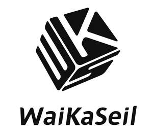

Trade Mark Journal No.2026/005 30 January 2026
UK00004325642 17 January 2026 (14,25,26)

- Class 14
- Amulets [jewellery]; Works of art of precious metal; Ornaments [jewellery, jewelry (Am.)]; Gemstones, pearls and precious metals, and imitations thereof; Lapel pins of precious metals [jewellery]; Decorative brooches [jewellery]; Jewels; Brooches [jewellery, jewelry (Am.)]; Jade; Costume jewelry; Bracelets for watches; Jewelry brooches; Jewellry; Bangles; Articles of jewellery with precious stones; Pearls; Jewellery made of crystal; Chokers; Jewellery in precious metals; Charms [jewelry].
- Class 25
- Linen clothing; Costumes; Ladies' clothing; Clothing for children; Woolen clothing; Women's underwear; Outerwear; Knitwear [clothing]; Knit shirts; Sports clothing; Mitts [clothing]; Casual clothing; Men's clothing; Cashmere scarves; Cashmere clothing; Silk clothing; Cardigans; Caps; Snoods [scarves]; Capelets.
- Class 26
- Gold embroidery; Festoons [embroidery]; Fancy goods [embroidery]; Embroidery; Charms, other than for jewellery, key rings or key chains; Brooches [clothing accessories]; Silver embroidery; Ornaments (Hair -); Embroidery for garments; Embroidered emblems; Embroidered badges; Oriental hair pins; Buttons; Buckles for clothing; Brooches for clothing; Bags [Zip fasteners for -]; Hair decorations; Slide fasteners; Shirt buttons; Scarf clips not being jewelry.
Jiaxing Wuse Culture and Art Media Co., Ltd.
Representative: YH Consulting Limited